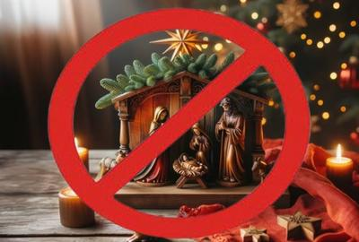

Muchos piensan que la Navidad —esa mezcla heterogénea de rituales antiguos, símbolos comerciales y dogmas religiosos— siempre fue un día celebrado sin mayor controversia. Nada más lejos de la realidad. No sólo ha estado prohibida en la historia, sino que aún hoy existen países donde esta celebración es ilegal o fuertemente restringida. Una paradoja irónica: una festividad tan valorada en Occidente como unificadora tradicional de las familias, llega a ser tanto criminalizada por cristianos agudos, como vetada por autoridades laicas o estados confesionales.


I. Inglaterra y Massachusetts: Los puritanos contra la fiesta
En el siglo XVII la Navidad era un período en que muchas personas —cristianas y no tanto— se entregaban a festejos intensos: música, bebida, banquetes, decoraciones, y toda la jerga que hoy asociamos con la temporada. Y para los puritanos, un movimiento protestante que aspiraba a una moral estricta, ese clima de jolgorio no era sólo impropio, sino «pagano», y contrario a una visión «bíblica» de lo que debía ser una comunidad piadosa[1].
Así que en Inglaterra, entre 1644 y 1660, bajo el control puritano del gobierno republicano —del militar y dictador Oliver Cromwell— la Navidad fue abolida legalmente. Las tiendas y mercados debían permanecer abiertos el 25 de diciembre, las iglesias debían cerrar, y celebrar una misa navideña era ilegal. Hubo protestas populares exigiendo la libertad para beber, cantar y reunirse como antes. Pero la prohibición sólo se levantó con la restauración de la monarquía en 1660[1].
Y la misma lógica moralista cruzó el Atlántico hasta los actuales Estados Unidos. Durante la colonia de Massachusetts, los cristianos puritanos aplicaron medidas similares: entre 1659 y 1681 no se celebraba oficialmente la Navidad, con multas para quienes «observasen el día como fiesta». Y aunque la prohibición fue derogada, muchos puritanos siguieron considerando esta práctica como una «abominación pagana»[2].
Desde una perspectiva crítica, esto es un ejemplo clásico de cómo una institución religiosa puede imponerse a la sociedad civil, no para elevar el pensamiento humano, sino para suprimir la alegría y controlar las costumbres populares bajo una pretensión de pureza doctrinal.
IV. Entre superstición, historia y poder
Que la Navidad haya sido prohibida en contextos cristianos como Inglaterra y Massachusetts, y hoy lo sea en estados laicos, confesionales o autoritarios, revela algo fundamental: que no todos consideran estas fiestas como «tradiciones inocentes». Porque también están impregnadas de identidad cultural y control social.
En resumen, este fenómeno ilustra:
Cómo las instituciones —ya sean eclesiásticas o estatales— pueden instrumentalizar tradiciones culturales para imponer normas doctrinales o políticas.
Qué tan contradictorio puede ser que una celebración supuestamente destinada a promover «paz y buena voluntad», haya sido objeto de prohibiciones severas.
Cómo las festividades, lejos de ser neutras, tienen un impacto en el control de la cultura y la conciencia humana.
Con todo esto la Navidad, con su mezcla de elementos paganos, comerciales, religiosos y seculares, se ha convertido en un espejo donde se reflejan tensiones profundas entre tradición y modernidad, fe y razón, comunidad y autoridad.
[Godless Freeman]
Comentarios
Comments powered by Disqus